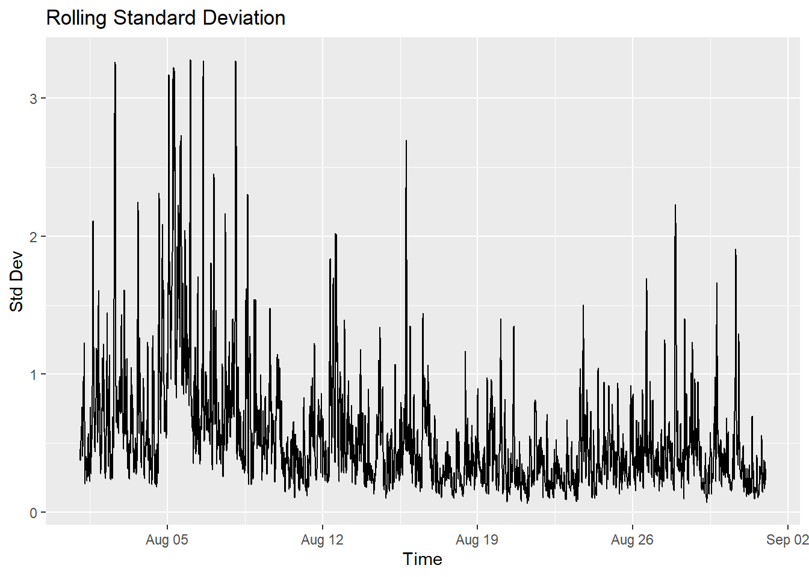
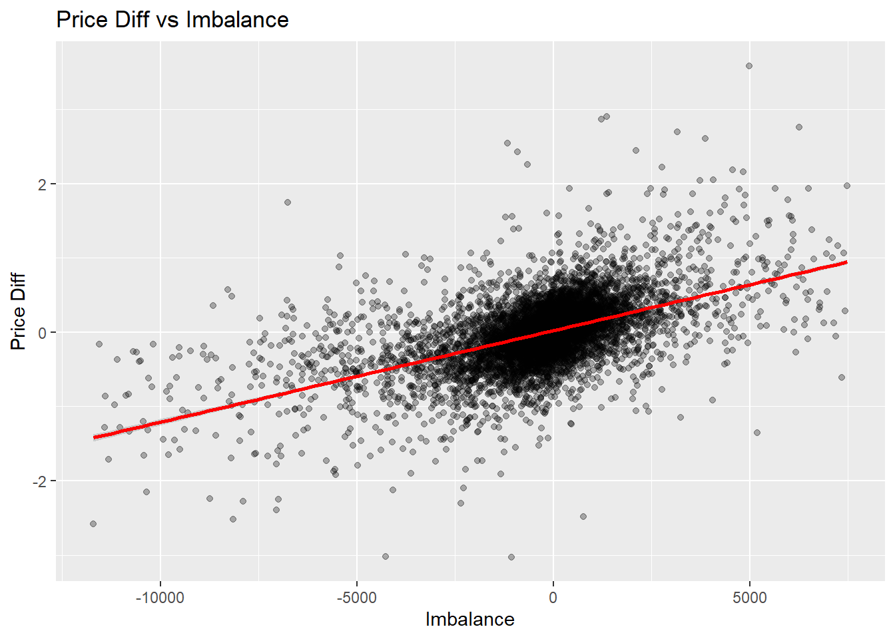

trades <- fread("data/SOLUSD_PERP-trades-2024-08.csv")
bookTicker <- fread("data/SOLUSD_PERP-bookTicker-2024-08.csv")
trades$ts <- as.POSIXct(
trades$time / 1000,
origin = "1970-01-01",
tz = "UTC"
)
# Calculate mid-price
bookTicker[, mid_price := (best_bid_price + best_ask_price) / 2]
# Order the timestamps
setorder(trades, time)
setorder(bookTicker, transaction_time)Estimation of Market Impact
Introduction
To compute trading curves and trading envelopes, market impact and execution costs are needed.
setkey(bookTicker, transaction_time)
trades[, pre_mid := bookTicker[trades, on = .(transaction_time < time), mult = "last", .(mid_price)]$mid_price]
trades[, post_mid := bookTicker[trades, on = .(transaction_time > time), mult = "first", .(mid_price)]$mid_price]The mid price of a stock is modeled by a process \[ d S_t = \sigma d W_t + k v_t dt \] where \(\sigma\) is a positive constant called the arithmetic volatility of the asset, and \(k\) is the nonegative parameter modeling the magnitude of the permanent market impact.
investigate how the trader’s own actions together with the order flow of other market participants affects the price of the assets she is trading.
trades[, sign := ifelse(is_buyer_maker, -1, 1)]
trades[, sign_base_qty := base_qty * sign]
bars <- trades[, .(
imbalance = sum(sign_base_qty),
base_qty = sum(base_qty),
n_trades = .N,
price_diff = last(post_mid) - first(pre_mid),
pre_mid_price = first(pre_mid),
post_mid_price = last(post_mid)
), by = .(bin = floor_date(ts, "5 minutes"))]
bars[, std_dev := rollapply(pre_mid_price, width = 15, FUN = sd, fill = NA, align = "right")]q_std_dev <- quantile(bars$std_dev, 0.995, na.rm = TRUE)
q_imbalance_high <- quantile(bars$imbalance, 0.995, na.rm = TRUE)
q_imbalance_low <- quantile(bars$imbalance, 0.005, na.rm = TRUE)
bars <- bars[std_dev <= q_std_dev & imbalance <= q_imbalance_high & imbalance >= q_imbalance_low]Regression
fitted <- lm(price_diff ~ imbalance, bars)
summary(fitted)
Call:
lm(formula = price_diff ~ imbalance, data = bars)
Residuals:
Min 1Q Median 3Q Max
-2.91825 -0.17697 -0.00934 0.16921 2.94785
Coefficients:
Estimate Std. Error t value Pr(>|t|)
(Intercept) 2.286e-02 3.932e-03 5.814 6.32e-09 ***
imbalance 1.234e-04 2.117e-06 58.256 < 2e-16 ***
---
Signif. codes: 0 '***' 0.001 '**' 0.01 '*' 0.05 '.' 0.1 ' ' 1
Residual standard error: 0.3652 on 8786 degrees of freedom
Multiple R-squared: 0.2786, Adjusted R-squared: 0.2786
F-statistic: 3394 on 1 and 8786 DF, p-value: < 2.2e-16ggplot(bars, aes(x = bin, y = std_dev)) +
geom_line() +
labs(title = "Rolling Standard Deviation", x = "Time", y = "Std Dev")
ggplot(bars, aes(x = imbalance, y = price_diff)) +
geom_point(alpha = 0.3) +
geom_smooth(method = "lm", color = "red", se = TRUE) +
labs(title = "Price Diff vs Imbalance",
x = "Imbalance", y = "Price Diff")`geom_smooth()` using formula = 'y ~ x'